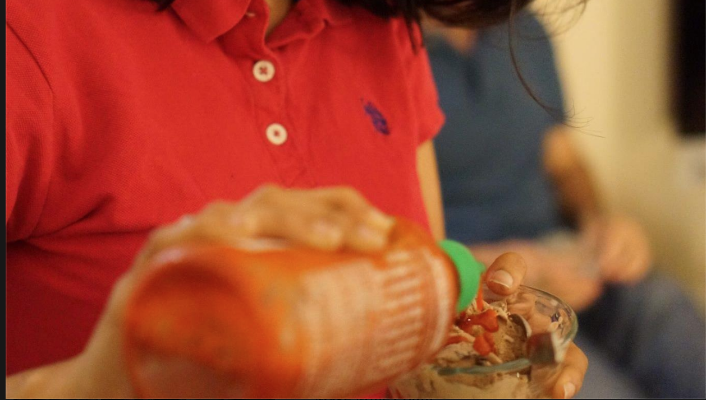

|  |
I graduated from MIT in 2013 with a degree in Computational Biology, and spent a productive year working for the Healthcare team of Palantir Technologies before beginning my PhD at Stanford. I spent the first 18 years of my life in Bangalore, India, but if you compliment me with "your English is very good", you will get the response "thanks; so is yours". If there's one thing I'm uncommonly passionate about, it's improving the quality of political discourse. I find it absurd that we tend to think in terms of "debates", where there is a "side" that "wins"; it leads to sloppy reasoning that people would easily see as flawed if they didn't feel so threatened by disagreement. You can find more of my thoughts on my facebook feed. I am particularly proud of this post. Here are some other details in no particular order: I'm a somewhat competent actor, and can do an entertaining rendition of "My Angry Vagina" from the Vagina Monologues (while I admit the play as a whole is problematic, I guarantee that monologue will make you laugh when delivered in a thick Indian accent). I dance unexpectedly well. I have a google doc with ~15,000 words describing about half the plot of a fantasy novel. I don't date men. I do date women†. And I add Sriracha to everything (pictured on the left: chocolate ice cream - it was good!). †I mention this because (1) there's an underenrichment of queer people in STEM, and (2) because it might make me less likely to be harassed by random guys on the internet who then get angry when I explain I'm not interested (yes, this has happened). |